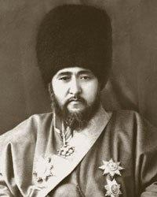
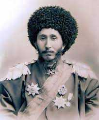
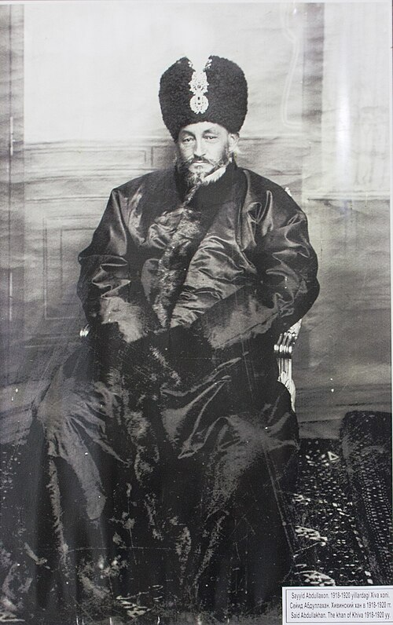
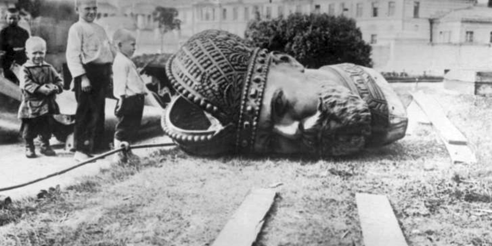
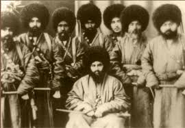
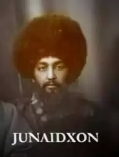
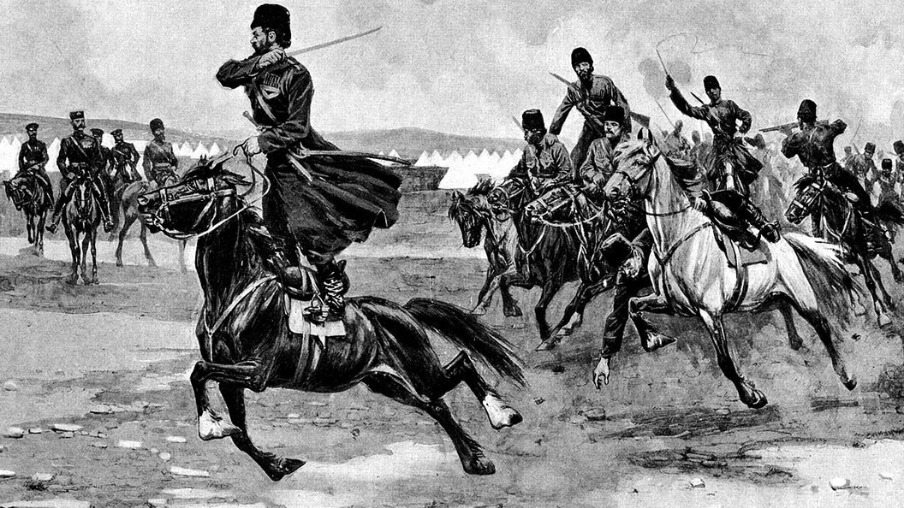

10-sinf · O‘zbekiston tarixi
1910–1920-yillar
Xiva xonligi bayrog‘i
Manba: «O‘zbekiston tarixi», 10-sinf darsligi (2022), 99–101-betlar
Xalq harakatlari
Islohotlar uchun kurash
Xiva xonligining tugatilishi
1. XIX asrning oxiri – XX asrning boshlarida Xiva xonligida ijtimoiy-iqtisodiy vaziyat qanday edi?
2. Xalq noroziligi harakatlarining maqsadlari nimadan iborat edi?
Darslik, 99-bet

Vafot etgach, taxtni uning o‘g‘li egalladi.

1910–1918-yillar

1918-yil oktyabrdan; 1920-yil fevralda taxtdan voz kechdi.
Darslik, 99–101-betlar · portretlar o‘qituvchi taqdimotidan
Asfandiyorxon (1910–1918)
Muhammad Rahimxon II vafot etgach, imperiya hukumati yordamida taxtni uning o‘g‘li Asfandiyorxon egallagan.
1917-yil fevral
Rossiyadagi fevral voqealaridan keyin Yosh xivaliklar Asfandiyorxondan islohotlar o‘tkazish to‘g‘risidagi manifestni imzolashni talab qildilar.
Islohotlar mazmuni
Xon hokimiyati saqlangan, ammo Majlis (deputatlar palatasi) va Nozirlar kengashi (Vazirlar kengashi) bilan cheklangan konstitutsiyaviy monarxiya tashkil etilishi ko‘zda tutilgan.

1917-yil fevral voqealari (Rossiya)
Darslik, 99-bet
● Xiva va Toshkent legendada alohida belgilangan.
Viloyatlar: Sirdaryo, Yettisuv, Kaspiyorti, Samarqand, Farg‘ona.
«Buxoro va Xiva chegarasi» alohida chiziq bilan ko‘rsatilgan.
Chegaralar sxematik. Saytdagi interaktiv xaritada hammasini bosib ko‘rish mumkin.
Darslik, 101-bet xaritasi asosida

Yosh xivaliklar (o‘qituvchi taqdimotidan)
1917-yil fevral voqealaridan keyin xondan islohotlar o‘tkazish to‘g‘risidagi manifestni imzolashni talab qildilar.
Konstitutsiyaviy monarxiya: Majlis va Nozirlar kengashi.
Polvonniyoz Hoji Yusupov va Husaynbek Matmurodov 1917-yil 4-aprelda xon qabul qilgan delegatsiyaga boshchilik qilgan.
Polvonniyoz Yusupov 1920-yilda hukumatning birinchi raisi bo‘ldi.
Darslik, 99 va 101-betlar
4-aprel
Xon devonxonasi ro‘parasida bir necha ming kishilik namoyish bo‘lib o‘tdi.
Delegatsiya
Xon Polvonniyoz Hoji Yusupov va Husaynbek Matmurodov boshchiligidagi delegatsiyani qabul qildi.
5-aprel
Xon Yosh xivaliklar taqdim etgan manifestni imzoladi. Xorazm konstitutsiyaviy monarxiya etib belgilandi.
26-aprel
Majlisning birinchi sessiyasida 30 nafar xivalik deputat va turkmanlardan 7 nafar vakil qatnashdi; Majlis Vazirlar kengashini sayladi.
Ikki oy o‘tmay
Konservativ kuchlar harbiy to‘ntarish qildi va Majlisni tarqatib yubordi. Yosh xivaliklar hibsga olinib, bir qismi otib tashlandi.
Darslik, 99-bet
1. Xon va uning hukumati tomonidan mamlakatni mutlaq boshqarishni butkul barham toptirish.
2. Xiva xoni, shahzodalar va vazirlarga tegishli mablag‘ va mulklarni xalq mulki deb e’lon qilish.
3. Kambag‘allar hayotini yaxshilash yo‘lida yirik zamindorlar yerlaridan foydalanish.
4. Bolalarni bepul o‘qitish uchun xonlikning hamma joyida maktablar ochish.
5. Shaharlar va aholi manzilgohlarida bepul shifoxonalar va sog‘lomlashtirish muassasalari ochish.
6. Xon va beklari kambag‘al aholidan tortib olgan yer, mulk va boshqa narsalarni qaytarib berish.
7. Majburiy mehnatga jalb qilish (begor)ni butunlay yo‘q qilish.
Darslik, 100-bet
Qurbon Mamed (Muhammad) — turkmanlarning yovmut qabilasi sardori.
Asfandiyorxon uni turkman qabilalarining sardori etib tayinlagan (1915).
Sovetlar xavfidan qo‘rqqan Asfandiyorxon uni bosh qo‘mondon etib tayinladi.
Saroyda mavqeyini oshirgan Junaydxon davlat to‘ntarishini amalga oshirdi.
Nurullaboy saroyida Asfandiyorxonga suiqasd uyushtirildi.
Taxtga Asfandiyorxonning akasi Said Abdulla o‘tirdi, amalda hokimiyat Junaydxon qo‘lida to‘plangan edi.

Junaydxon
1917-yil oktyabr to‘ntarishidan keyin Rossiyada bolsheviklar hukumatni qo‘lga kiritdi; Turkistonda ham hokimiyat bolsheviklar qo‘liga o‘tdi va sovet respublikasi tuzildi.
Darslik, 100-bet («Bilasizmi?»)
1920-yil yanvar
Sovetlar Xivaga qarshi hujumga o‘tdi.
Fevral boshigacha
Sovetlar bir qator shaharlarni qo‘lga kiritdi.
Natija
Said Abdullaxon taxtdan voz kechdi.

Rasm: o‘qituvchi taqdimotidan
Darslik, 101-bet
XXSR bayrog‘i
1920-yil 27–30-aprel · Xiva
Xonlik tugatilganini.
Xorazm Xalq Sovet Respublikasi (XXSR) tuzilganini.
XXSRning muvaqqat Konstitutsiyasini qabul qildi.
15 kishidan iborat hukumat — Xalq Nozirlar Kengashini sayladi.
Yosh xivaliklar rahbarlaridan Polvonniyoz Yusupov hukumatning birinchi raisi bo‘ldi.
Darslik, 101-bet
1910
Asfandiyorxon taxtga chiqdi
1917 fevral
Yosh xivaliklar manifest talab qildi
1917 4–5-aprel
Namoyish; manifest imzolandi
1917 26-aprel
Majlis birinchi sessiyasi
Ikki oy o‘tmay
Harbiy to‘ntarish, Majlis tarqatildi
1918 oktyabr
Junaydxon to‘ntarishi; Said Abdulla taxtda
1920 yanvar–fevral
Sovetlar hujumi; Said Abdullaxon taxtdan voz kechdi
1920 27–30-aprel
Qurultoy: xonlik tugatildi, XXSR
Darslik, 99–101-betlar
1. Manifest talablarini amalga oshirish uchun xon tomonidan qanday sharoitlar yaratilishi talab etilgan?
2. Rossiyada qanday vaziyat hukm surmoqda edi?
3. Rossiyadagi 1917-yil fevral va oktyabr to‘ntarishlari Xiva xonligiga qanday ta’sir ko‘rsatdi?
Darslik, 101-bet · Davomi: Isakov school saytida xarita va test